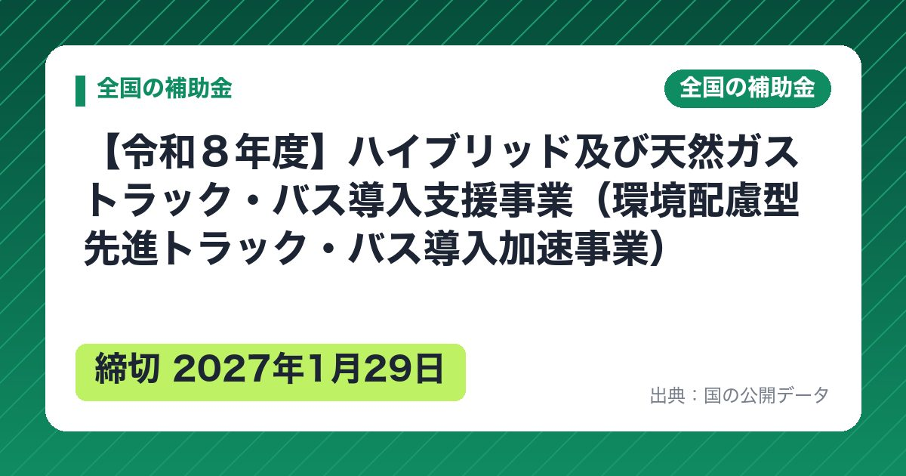

【令和８年度】ハイブリッド及び天然ガストラック・バス導入支援事業（環境配慮型先進トラック・バス導入加速事業）

締切 2027年1月29日｜上限 要確認
ハイブリッド連節バスを除く、ハイブリッド及び天然ガストラック・バスを導入するための補助金
概要
| 対象地域 | 全国対象です |
|---|---|
| 補助上限額 | 要確認 |
| 補助率 | 補助対象となるハイブリッド及び天然ガス自動車と同クラスの標準的燃費基準自動車との価格の差額の２分の1 |
| 受付期間 | 2026年7月17日 〜 2027年1月29日 |
| 対象の従業員数 | 従業員数の制約なし |
| 利用目的 | まちづくり・地域振興支援がほしい / 設備整備・IT導入をしたい / エコ・SDGs活動支援がほしい |
| 対象業種 | 製造業 / 公務（他に分類されるものを除く） / 運輸業、郵便業 / 金融業、保険業 |
| 実施機関 | 令和８年度ハイブリッド連節バス導入支援事業 |
公募の内容（原文の抜粋）
公益財団法人北海道環境財団は、環境省から令和８年度二酸化炭素排出抑制対策事業費等補助金（環境配慮型先進トラック・バス導入加速事業（ハイブリッド及び天然ガストラック・バス導入支援事業））の交付決定（令和８年４月 1 日付）を受け、トラック又はバスの運行における二酸化炭素の排出削減を図り、もって地球環境保全に資することを目的として、ハイブリッド及び天然ガストラック・バスを導入する事業者に対して補助金を交付する事業を実施します。
■補助事業の名称
令和８年度二酸化炭素排出抑制対策事業費等補助金（環境配慮型先進トラック・バス導入加速事業（ハイブリッド及び天然ガストラック・バス導入支援事業（ハイブリッド連節バス導入支援事業を除く））
■目的と性格
（１）トラック・バス所有事業者が二酸化炭素排出削減効果を有するハイブリッド及び天然ガストラック・バスを導入する事業に要する経費を補助することにより、トラック・バスの運行において二酸化炭素の排出削減を図り、もって地球環境保全に資することを目的としています。
（２）事業の実施によるエネルギー起源二酸化炭素の排出量が確実に削減されることが重要です。このため、事業完了後は、二酸化炭素削減効果について事業報告書を提出していただくことになります。また、補助事業の完了後においても、善良な管理者の注意をもって管理し、補助金の交付の目的に従って、その効率的運用を図ることが必要です。
（３）これらの義務が十分果たされないときは、財団より改善のための指導を行うとともに、事態の重大な事案については、交付決定を取消すこともあります。また、新たな申請を受理しない場合もあります。（⇒詳しくは、公募要領をご覧ください。）
■補助対象事業の要件
（１）事業者が次に掲げるトラック又はバスであって継続的に製造され市場において販売することが予定されているものを導入する事業を対象とします。
なお、ハイブリッド及び天然ガスバスについては定員１１人以上とします。
また、ハイブリッド及び天然ガストラック・バスのいずれも、トラック又はバスをベース車両として架装物等動力構造以外の部分を変更した特種車（トラックの場合は、積載があるものに限る。）も含むものとします。
① ハイブリッド自動車（エンジンとモーターを組合せた動力源を持つ自動車。ただしプラグインハイブリッドを除く。）
② 天然ガス自動車
なお、①～②に該当する車両は、財団ホームページに事前登録情報として掲載されます。
（２）補助対象車両は、令和８年４月１日（水）から令和９年２月26日（金）（補助対象車両を購入後に交付申請する場合は令和９年1月29日（金））までに新車として新規に登録する（された）車両であること。（割賦販売による所有権留保は認められません。）
■補助対象事業者
① トラックを事業の用に供する者。
② バスを事業の用に供する者。
③ トラック又はバスの貸渡し（リース）を業とする者（①又は②に貸し渡す者に限る。）
■申請者
申請できるのは、補助対象車両の自動車検査証上の所有者となる者又は所有者となっている者（既に購入している場合）です。
リースの場合は、リース事業者となります。
■事業の受付期間
令和８年７月17日(金) ～ 令和９年１月29日(金)
・申請に係る審査は申し込み順に行いますが、予算額の残額が２割程度に達した場合は、申請受付期間を当該日付から１か月（30日）後までとします。
なお、予算残額を超える申請があった場合は、当該日付以降の申請については書類審査の後、抽選等により補助事業者を決定します。
・予算額の残額が２割程度に達した場合は、財団ホームページで公表いたします。
・申請状況によっては、一つの申請で多数の車両を申請する場合は、事業所毎等の申請にしていただくこともあります。
■申請時の依頼事項＊＊＊＊＊＊＊＊＊＊＊＊＊＊＊＊＊＊＊＊＊＊＊＊＊＊＊＊＊＊＊＊＊＊＊
申請後は担当者様のメールアドレス確認のため、応募アドレス＜trkbus_oubo@heco-hojo.jp＞まで
【申請済みである旨】を記載した電子メールを送付いただきますようお願いいたします。＊＊＊＊
＊＊＊＊＊＊＊＊＊＊＊＊＊＊＊＊＊＊＊＊＊＊＊＊＊＊＊＊＊＊＊＊＊＊＊＊＊＊＊＊＊＊＊＊
■問合せ先
公益財団法人北海道環境財団 補助事業部
問い合わせ用メールアドレス：trkbus_ask@heco-hojo.jp
■参照URL
ハイブリッド及び天然ガストラック・バス導入支援事業の公募情報
申請前の準備
- GビズIDプライム（電子申請に必須・無料・発行まで1〜2週間かかることあり）：gbiz-id.go.jp
- 直近の決算書（個人事業主は確定申告書の控え）
- 事業計画（何に使い、どう売上・生産性が上がるか）
- 見積書（買う物・頼む工事の）
ほとんどの補助金は、申請時に直近の決算書（個人は確定申告書）が必要で、交付後も経費の帳簿が求められます。
広告準備に使えるサービス：
・無料の会計自動化ソフト マネーフォワード クラウド会計  （法人の帳簿・決算書づくりを自動化）
（法人の帳簿・決算書づくりを自動化）
・やよいの青色申告オンライン  （個人事業主の青色申告に）
（個人事業主の青色申告に）
全国のほかの補助金
- 「太陽光発電導入拡大等技術開発事業」の第3回公募（締切 2026年11月25日）
- 【農林水産省】中山間地域所得確保推進事業（締切 2026年11月25日）
- 「ポスト5G情報通信システム基盤強化研究開発事業（社会課題解決に向けた量子コンピュータ次世代機開発・実証の加速）」（g12-2：部素材）の追加公募（締切 2026年11月26日）
- 【事前着手】令和8年度排出削減が困難な産業におけるエネルギー・製造プロセス転換支援事業（二次公募）（事業Ⅱ/紙パルプ・化学・セメント）（締切 2026年11月27日）
- 令和8年度排出削減が困難な産業におけるエネルギー・製造プロセス転換支援事業（二次公募）（事業Ⅱ/紙パルプ・化学・セメント）（締切 2026年11月27日）
- 令和７年度補正 ディマンドリスポンスの拡大に向けたIoT化推進事業（締切 2026年11月27日）
- 【令和８年度】二酸化炭素排出抑制対策事業費等補助金（地域再エネ水素ステーション保守点検等支援事業）（締切 2026年11月28日）
- 令和８年度二酸化炭素排出抑制対策事業費等補助金（運輸部門等の脱炭素化に向けた先進的システム社会実装促進事業のうち、農業機械の電動化促進事業）（締切 2026年11月30日）